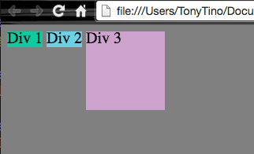
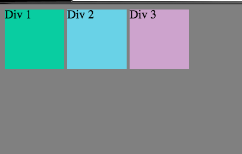

March 8, 2015
Post #3
Display: Inline;
Inline or Inline-Block?
Inline
Inline elements have the following qualities:
- Are not impacted by width or height parameters.
- All elements (or "items") sit on the same line, i.e. the items can have something on either their left or right.
- Do not work well with elements that are naturally blocks, like "p", or paragraph.
- Would be useful for creating a horizontal navigation bar or perhaps a header or footer.
- Below is an example of two divs with the position of inline, each of which has the same width and height parameters as the third div. The third div has a position of inline-block and is set to 100px by 100px.

Inline-Block
Inline-block elements have the following qualities:
- Like blocks, they accept height and width parameters.
- Unlike when using float, allows items to sit in parent container without issues (i.e. avoids overlap issues).
- Would be useful for creating columns or for four-sided objects.
- Below is an example with three different cubes (100px by 100px), each set to inline-block. Note that they're able to sit side-by-side with each other. However, also note the small margins that exist. Those are a drawback of using inline-blocks as they can make formatting a page difficult. They can be remedied by placing the html elements without any spaces/returns separating them.
